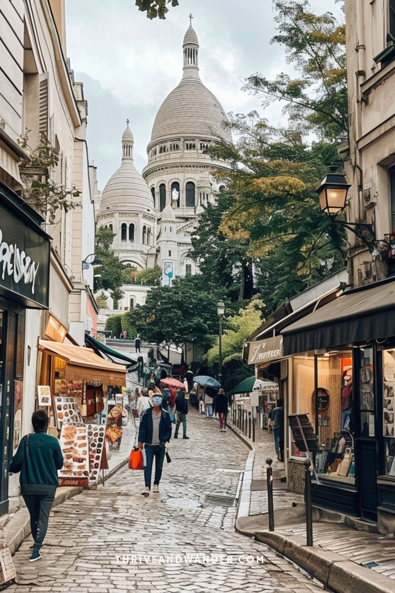
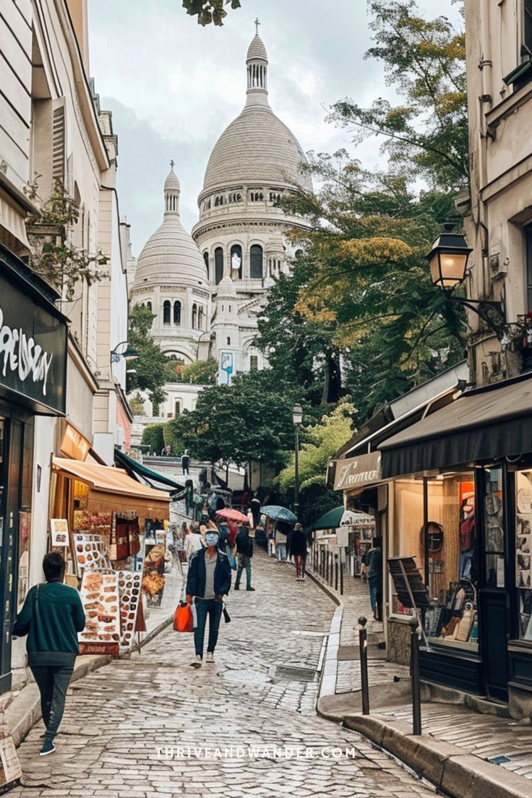

Explora París
París, la capital de Francia, es mucho más que una ciudad: es un símbolo de elegancia, arte y romance. Conocida como “la ciudad del amor” y cuna de la moda y la cultura europea, París encanta a todo aquel que la visita, con su arquitectura histórica, calles encantadoras y su ambiente bohemio.
La Torre Eiffel, el Louvre, la Catedral de Notre-Dame o el Arco del Triunfo son solo algunos de los íconos que hacen de París un destino soñado. Pero más allá de los monumentos, caminar por sus barrios como Montmartre o el Marais te hará sentir parte de una película, rodeado de cafés, artistas callejeros y una vida vibrante.
París es también un epicentro cultural. Con una agenda llena de exposiciones, conciertos, obras teatrales y una gastronomía galardonada, la ciudad ofrece algo para cada tipo de viajero. Ya sea que busques arte renacentista, arquitectura gótica o repostería de autor, aquí lo encuentras todo.
Visitar París es sumergirse en un estilo de vida. Tomar un café junto al Sena, explorar librerías antiguas, disfrutar un picnic en los jardines de Luxemburgo o simplemente perderse por sus calles empedradas… París no solo se visita, se vive intensamente.
 
